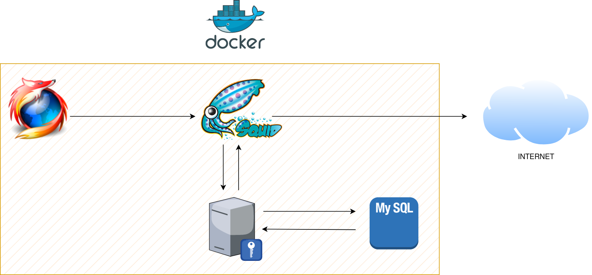

Servidor proxy Squid amb autenticació Radius amb Docker
Tasques a realitzar i detalls de la práctica

- El shared secret és una clau compartida entre els clients i el servidor Radius. S'utilitza per a limitar l'ús no autoriztat del servidor d'autenticació. El secret compartit d'esta pràctica és invent.
- Com a contrasenya de root de la BBDD MySQL podeu posar la que més vos agrade.
- Heu d'omplir els ports a utilitzar per cada servici en el
docker-compose.yml(son els ports per defecte del servicis). -
L'arxiu clients.conf identifica quins dispositius poden comunicarse amb el servidor Radius amb intencions d'autenticar-se, però no realitza l'autenticació. Eixa tasca pertany a l'arxiu users o, en el nostre cas, authorize.
Has de crear un usuari en el arxiu clients.conf de Freeradius (el nomb és indiferent, nombés serveix per a identificar al client). Mira el diagrama anterior atentament i tingues clar qui demanarà l'autorització a Radius
-
A l'inici del fitxer authorize crear un usuari amb autenticació en text plà (la credencial serà el vostre nom i de contrasenya el cognom). Este arxiu sí serveix per a l'autenticació
- Heu d'omplir l'arxiu radius_config de Squid.
- Afegir una ACL (llista d'accés) que es cride
SSL_Portsi que incloga el port 443. - Firefox enviarà tot el seu tràfic (http i https) al port configurat per a Squid. Configurar Firefox per a utilitzar el proxy, tant http, com https (mateix port d'Squid).
- Quan tot estiga funcionant, baixe-vos e instal·leu el certificat autogenerat per a que el tràfic HTTPS siga completament confiable i no done problemes.
-
Insertar un usuari en la BBDD
radiusdes del contenidor de freeradius, en la taularadcheck. Els valors:username --> Omplir attribute --> "Cleartext-Password" op --> ":=" value --> Omplir -
Totes les comprovacions s'han de fer mostrant els logs, tant d'Squid a on es puga veure tots els accesos a Internet que realitzeu, com de Freeradius i a on es mostren ambdòs autenticacions.
Atenció
Haurás de modificar el radius.conf del contenidor radius per a loguear els intents d'autenticació, tant si s'utilitza un password correcte, com si és incorrecte.
Donat que no teniu editor de texts en el contenidor, podeu trobar utilitat en aquest comand:
Contingut extra per a la recuperació de la pràctica
Per tal de completar la recuperació d'aquesta pràctica es demana, a més de tot lo anterior:
-
Configurar Squid per a que bloquegi totes les descarregues majors de 10MB. Podeu comprovar si funciona intentant baixar qualsevol distribució de Linux.
- S'ha de mostrar comprovacions tant del navegador com dels logs.
-
Configurar Squid per a que bloquegi tot accés a Internet a la IP del client.
-
S'ha de mostrar comprovacions tant del navegador com dels logs.
Consell
Configurar el bloqueig abans de que arrive a saltar l'autenticació del proxy.
-